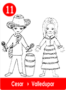

11 El Séptimo Vallenato - Cesar
- Consulta a Jesús
- Fábulas de Colombia
- Metodo Corima
- Arbol
- Flor
- Fruto
- Estrellas Pequeñas
- Nostradamus
- La Ruta del Sol
- Fabula de Corima
- Productos y Servicios
- Mensajeros Celestiales
- Juguemos
- Articulos
- Estrellas Humanas
- Herramientas
- Plantas Milagrosas
- Adorables Fechas
- Videos


La idea era muy ingeniosa, como era época de candidatos para el concurso de vallenatos, la escuela decidió conformar un grupo, escogiendo entre los alumnos de octavo un conjunto bien chévere, por eso colocaron un aviso que decía:
"Vocación de músico", nacido en el Departamento con deseos de proyectarse.
Eligieron a Polo de Valledupar, el acordeonista, Darío de Chimichagua, guitarrista, Roquete de Guatapuri, en la caja, Alejo de Río de Oro y su guacharaca.
Las voces: Lola de Aguachica, Tulio de los Ángeles y Adela de Chimichagua.
Una vez hecha la selección, había que elegir nombre para la canción que concursarían.
Polo propuso hacer algo distinto, las cosas en general no iban bien en el País, ellos tendrían así la oportunidad para quejarse.
Como eran siete, lo llamaron "El Séptimo Vallenato", acordaron aportar ideas, al estilo Vallenato, a modo de periódico y eligieron el titulo, "Dolor de Patria ".
Cada uno haría una estrofa para después ponerle música.Al día siguiente leyeron los versos elegidos.
En el Departamento del Cesar Arriba al norte está Valledupar Región que opina han de terminar Las peleas que acaban por matar. Los jóvenes del Cesar, No quieren armas, quieren pensar, Los pueblos no se toman por fuerza, Hay ingenio, el País lo quiere gozar. Ya los padres nos enseñan, Que el País necesita mucho mas Trabajar la tierra y hacer pan Consiguiendo dinero y tener paz. Bailemos y cantemos Decimos los del Cesar Porque la vida es bella Si aprendemos a amar La escuela ha de enseñar El idioma Universal Es la música que es bella Notas blancas y negras por igual Si su sangre es diferente No es roja y no corre mas Es que usted está ya muerto y ya se debe enterrar.
Amigos los invitamos a olvidar y déjenos de molestar . Que este mundo es bello Les decimos, los del Cesar |
Los siete vallenatos, le pusieron música, al duro trabajo, habían tenido que suprimir los versos insultantes algo divertidos, pero groseros.
Polo y sus amigos gozaron su ingenio y habilidades, finalmente se ganaron la copa , que los distinguía como los mejores de la fiesta Vallenata.
Luego hicieron una gira y llegaron al palacio del Presidente, allí con maracas, acordeones, caja, guacharacas y guitarras, se sintieron en casa, los nombraron los conquistadores modernos de la paz.
Pero el triunfo los dividió, ellos creyeron que la fama duraría para siempre Polo y su acordeón acompaña un conjunto Cubano.
Darío, Roque y Alejo formaron un trío y cantan en buses. Lola, Tulio, Adela y Polo formaron un conjunto, para alegrar fiestas.
Los Músicos son los mejores Embajadores del Mundo